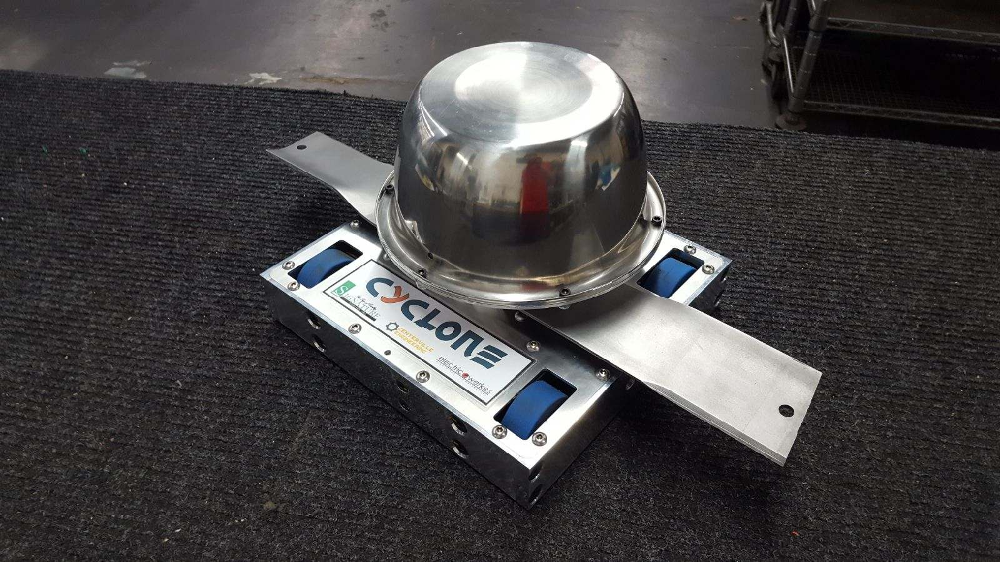
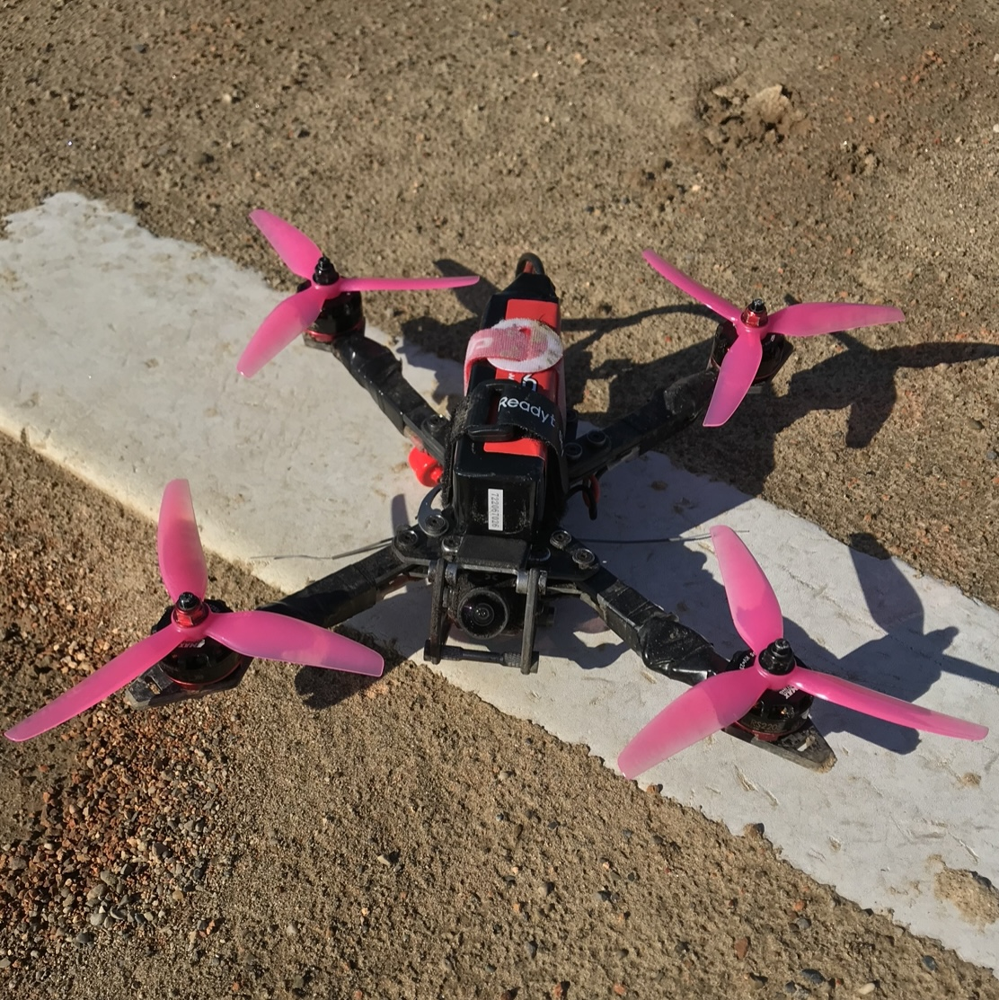
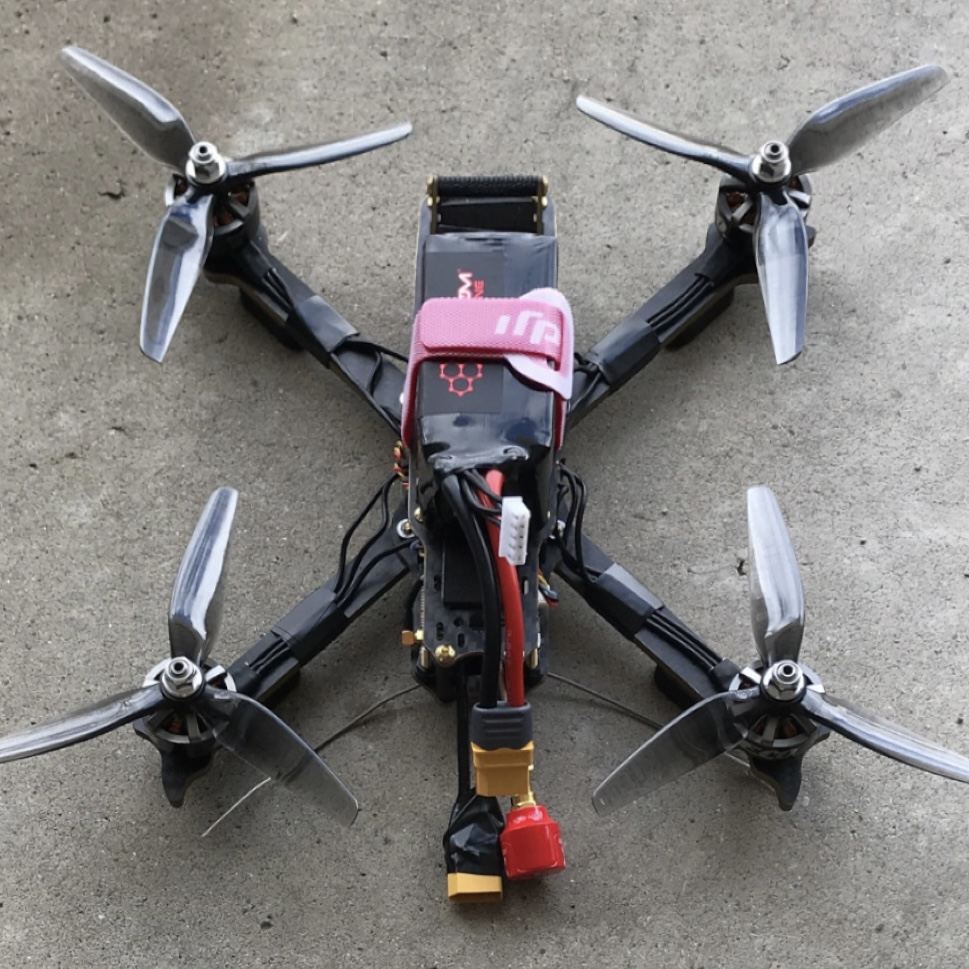
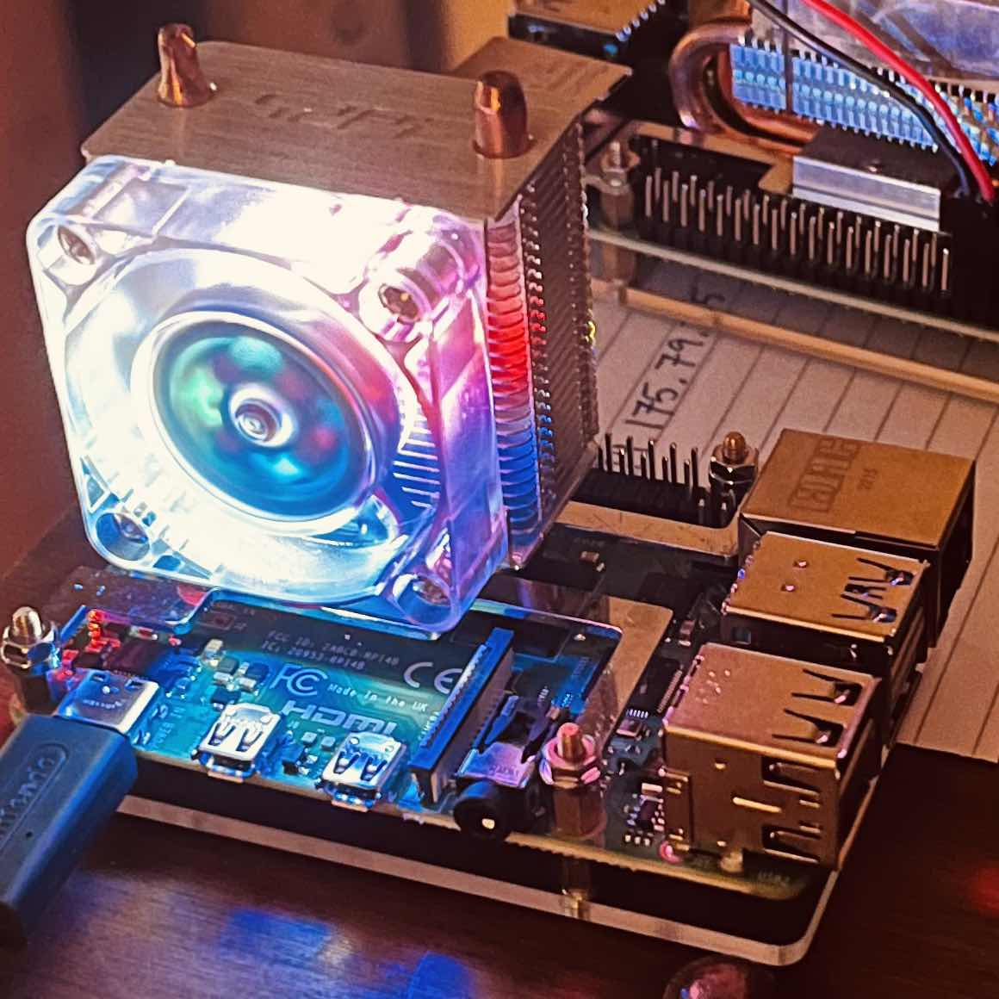

Cyclone

Cyclone is a 15-pound battlebot designed, built, tested, and battled by a team of four I was a part of for the Centerville High School engineering class. The whole project took about 11 months and $976 to complete. It uses a lawnmower blade as its weapon, providing it high durability and high flexibility and letting it manage hits very well. Cyclone was a test of our machining capabilities requiring use of mills, lathes, routers, wire EDMs, some manual and some CNC. The design process challenged our knowlegdge of CAD software and the engineering design process.
My contributions to the team began with my background in technical drawings. Once our parts began their design stages, I was able to make some of the drawings of the parts from the 3D model. The team decided to give me some of the more complicated drawings, while the more basic drawings were given to be done by the people who had less experience with making drawings. Over time, some prints needed to be changed and I would often check the drawings to make sure all necessary dimensions were measured to the proper accuracy and tolerance.
Soldering was another area I had some experience in while going into this project. I had, in the past, soldered small through-hole projects on my own. The soldering we had to do for our robot was a little different from the smaller circuits I worked on in the past. We needed to solder 14 AWG and 12 AWG wires together, attached to bullet connectors, and battery connectors. Soldering clean joints and keeping all connectors insulated with heat shrink is necessary to ensure the batteries, motors, ESCs and radio receiver didn't short out. I made it a priority to keep all exposed wires cleanly connected and wrapped.
The project resulted in our bot placing first place for high school teams and second place overall at the fall 2019 Xtreme BOTS tournament. I recently returned to the event to help the current Centerville High School teams with necessary repairs between fights.
See some of Cyclone's fights in the Gallery.
"One of the most difficult issues to overcome during the Cyclone design process was the design of the weapon's bearing housing. A design with a stationary weapon shaft along with a roller-bearing housing had never been done in the 15 pound division, so it was definitely a challenge designing something from scratch that was unproven."-Cale Cokley, Cyclone Team
Personal Website
This website was done as a project for my HTML and CSS class at Sinclair Community College. It is meant to be a show of my abilities with HTML and CSS that I learned during the semester. Every line of code was typed from scratch! My prior programming experience was with structured or object-oriented and working with a markup language took a little getting used to. After getting familiar with it, I find myself going into other website's source files and seeing what bits I can parse though most of them use more elaborate frontend frameworks.
Oxygen

This was second drone I custom built, and the one still operational today. I wanted to make a UAV that was more stable in flight and a bit more compact. Its frame is a 250mm 115g carbon fiber, with a unique mounting orientation. For my electronics stack I used a Rush Tank VTX, DALRC F405 AIO flight controller, and a dual-antenna Spektrum RX. My ESCs needed to be mounted on the frame arms (which were very thin), so I used four Flycolor 36A X Cross Slims and connected them to EMAX RS2205 2300KV motors which provided good torque and a design that actively cooled the motor coils. I've gone through several sets of propellers, but consistently have success with Ethix S5 tri-blades. My camera is currently a Foxeer Mini Predator, but may be replaced in the near future. Oxygen is built for 4s batteries, so it's not the fastest drone I've made but it's light and agile and very consistent.
I decided to go for a very unique designed frame that would maximize my stability by putting the center of mass both very close to the flight controller and close to the plane of the propellers. In order to meet these conditions, I picked a frame that mounted the battery at the level of the motors and would have my stack hang below that level. Normally the other way around, with the electronics stack inline with the motors and battery hanging below, this orientation required me to mount my stack upside-down relative to the motors. It took some playing around with Betaflight to make my flight controller believe it was right side up before it was working properly.
See more images in figures 2a-2f in the Gallery.
Wendigo

This was my first foray into building freestyle and racing drones. Wendigo was very much a testbed to see what worked and what would result in catastrophe when changing PID settings, batteries, and propellers. The parts that stayed consistent were the DALRC F405 flight controller, DALRC Engine Pro 4-in-1 ESC, and Emax ECO2306 2400kv motors. The VTX, RX, and camera were largely the same as Oxygen.
This drone experienced several communications issues causing spinouts and video losses. The frame took heavy damage from a number of crashes and Wendigo was disassembled, its electronics de-soldered, disconnected and cleaned, and the UAV as we know it was retired in early 2021.
See more images in figures 1a-1c in the Gallery.
Bungie API Website

Jötunn Comparer is an open-source project started by Connor Downs and myself. The project was incentive for us to learn the Python programming language and how to access APIs. We used the code we developed to access player data from the game Destiny 2 using the Bungie API. The website is hosted on github which does not allow Python scripts to run like JavaScript, forcing us to make a workaround. The method I came up with was using a Raspberry Pi as a "server" that would run the Python scripts to update the player data and push the data to the github repository. The update process was automated using crontab. This project gave me opportunity to learn Python, API requests, and Debian Linux. The current version of the website can be found by clicking the title of this section.